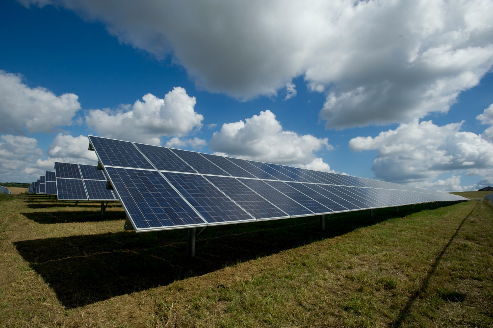
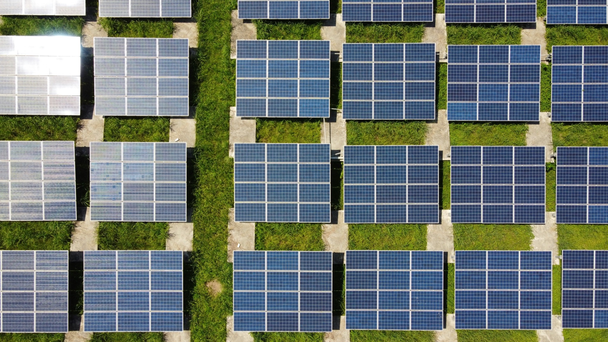

CACS114
ILLAWARRA
SOLAR
Exploring solar energy and community perspectives across the Illawarra.
Video placeholder — replace the YouTube link with the final project film.
Explore the project ↓1 — INTRODUCTION
Community voices in the Illawarra
Place holder.

2 — PHOTO GALLERY
Solar Energy in Illawarra
Click image to enlarge.
3 — INTERACTIVE MAP
Illawarra Region
4 — CONTACT US
Get in touch
For project enquiries, interview information or collaboration opportunities, please reach out to us via
Phone: 0000000000
Email: UOW@example.com